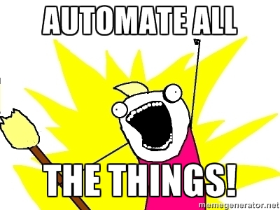

Jonathan D. Johnson
I am a Developer and Operations Engineer that is in love with building, learning, and teaching.
I help build things and automate processes at Crowd Favorite
The
Big Red
Button
Stress Free WordPress Deployment
A deployment is the process of moving code updates into your production environment.
Common deployment strategies include
- Uploading Files via FTP
- Pulling changes via Source Control
Manual processes in the typical FTP deployment workflow
You select the files you are going to upload.
Stressors
- Are you sure you have all the updated files selected?
- Has anyone edited those files since you began?
You drag them over the server window of your FTP client.
Stressors
- Did I test these changes thoroughly enough?
- Did I follow the deployment checklist perfectly?
(no, in fact you didn't)
You release the files.
One by one, each file is transferred into place sequentially.
Stressors
- What if my connection is dropped half way through the upload?
- Do I really want people hitting the site when it's halfway updated?
What to do now?
- Did you know which files you updated so you can revert them?
- Better yet, did you make backups of all the files you updated?
- Do you resort to editing files in production?
Going forward, how do you minimize the risk?
- Make a checklist? or add to it?
- Push code out less often? only in the middle of the night?
- "My bad, I'll try really hard not to make that mistake again."
Lets plan for a future where we're all just as stupid as we are today.
Dan Milstein (@danmil)

We're programmers, professional automators.
We can do better.
An open source tool for running scripts on one or more remote servers simultaneously. It's primary use is deploying websites.
A Capistrano plugin used for deploying WordPress specifically.
How it works
Capistrano runs bash commands remotely via an SSH connection on one or more remote servers. These commands
comprise a set of recipies that have been battle hardened to provide a reliable and repeatable process
to confidently deploy your web site or application.
Releases
A release is the result of a Capistrano deployment, the resulting webroot containing your
project and it's latest changes.
Capistrano builds up a new release directory for
every deployment and retains a defined number of previous
releases, each with their own self contained directories.
Symlinks
Capistrano uses the power of symlinks maintain directory structures that need to be shared accross all releases.
It also uses a symlink to specify the current release.
releases/
201308291323/
- █████████████████████████
- ████████████████████
- ██████████████████████
201310292312/
- █████████████████████████
- ████████████████████
- ██████████████████████
www
releases/
201308291323/
- █████████████████████████
- ████████████████████
- ██████████████████████
201310292312/
- █████████████████████████
- ████████████████████
- ██████████████████████
201311030421/
- █████████████████████████
- ████████████████████
- ██████████████████████
www
releases/
201308291323/
- █████████████████████████
- ████████████████████
- ██████████████████████
201310292312/
- █████████████████████████
- ████████████████████
- ██████████████████████
201311030421/
- █████████████████████████
- ████████████████████
- ██████████████████████
www
Additional Capistrano Features
- Easily extendable
- Multi-Stage Support
- Transparent multi-server support
Capistrano-WP Features
- Check current release for changes since the last deploy
- Handle WordPress via SVN
- Stage Specific Config files
Requirements
- SSH Access to your Hosting Environment
- Usage of a Version Control System (subversion, git, etc..)
- Your repository root should correspond to your webroot
Installation
capistrano-wp is distributed in the form of a Ruby Gem.
RubyGems is the standard package manager for Ruby and is included in Ruby 1.9 and later.
Ruby and RubyGems are pre-installed on the later versions of OSX and installers are available for Windows environments.
gem install capistrano-wp
Setting up a project
cd path/to/project
capify-wp .
This will create a Capfile and a group of config files under the config/ directory.
There are a few items in these files that will need to be modified for your project and deployment targets.
These files should be commited to version control.
Demo
Takeaways
- Don't accept broken processes
- Automation can help solidify and communicate processes
- Automation is also about accessibility